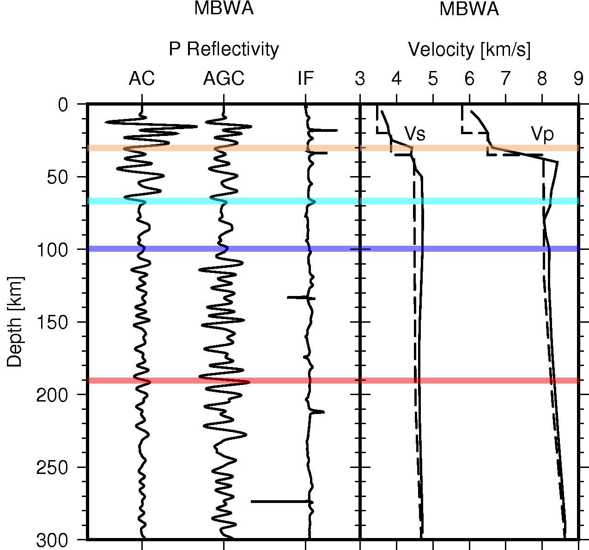

Seismic daylight imaging¶
Description: Seismic daylight imaging results of IU.MBWA in Western Australian Craton.
{kind=link}
1 2 3 4 5 6 7 8 9 10 11 12 13 14 15 16 17 18 19 20 21 22 23 24 25 26 27 28 29 30 31 32 33 34 35 36 37 38 39 40 41 42 43 44 45 46 47 48 49 50 51 52 53 54 55 56 57 58 59 60 61 62 63 64 65 66 67 68 69 70 71 72 73 74 75 76 77 78 79 80 81 82 83 84 85 86 87 88 89 90 91 92 93 94 95 96 97 98 99 100 101 102 103 104 105 106 107 108 109 110 111 112 113 114 115 116 117 118 119 120 121 122 123 124 125 126 127 128 129 130 131 132 133 134 135 136 137 138 139 140 141 142 143 144 145 146 147 148 149 150 151 152 153 154 155 156 157 158 159 160 161 162 163 164 165 166 167 168 169 170 171 172 173 174 175 176 177 178 179 180 181 182 183 184 185 186 187 188 189 190 191 192 193 194 195 196 197 198 199 200 201 202 203 204 205 206 | #!/usr/bin/env pythoon
"""
plot P reflectivity and IF
"""
import os
import glob
import gmt as gmt5
from obspy import read
import numpy as np
def proc_sac(file, xyfile, idn, scale):
tr = read(file)[0]
z = np.arange(tr.stats.npts) * tr.stats.delta
d = tr.data
d = d/max(abs(d))*scale + idn
fp = open(xyfile, "w")
for i in range(len(z)):
fp.write("%f\t%f\n" % (d[i], z[i]))
fp.close()
def read_vel(file, xyfile):
with open(file, "r") as fp:
lst = fp.readlines()
fp = open(xyfile, "w")
for line in lst:
row = line.split()
dep = float(row[3])
val = float(row[4])
fp.write("%f\t%f\n" % (val, dep))
fp.close()
pass
def plot_ac(fileid, datapath, datapath2, figpath):
acfile = datapath + "/" + fileid + ".sac.d"
acmfile = datapath + "/" + fileid + ".norm.d"
agcfile = datapath + "/" + fileid + ".agc.d"
ifnfile = datapath + "/" + fileid + ".ifn.d"
iffile = datapath + "/" + fileid + ".if.d"
tr = read(acfile)[0]
fileid = tr.id
vpfile = datapath2 + "/" + fileid + ".vpn"
vsfile = datapath2 + "/" + fileid + ".vsv"
anfile = datapath2 + "/" + fileid + ".rani"
qsfile = datapath2 + "/" + fileid + ".qsi"
difile = datapath2 + "/" + fileid + ".txt"
refile = datapath2 + "/" + fileid + ".res"
psfile = figpath + "/" + fileid + ".ps"
print psfile
stnm = fileid.split(".")[1]
# moho depth and lab depth
with open(difile, "r") as fp:
line = fp.readline()
row = line.split()
mdep = float(row[3])
ldep = float(row[4])
try:
mdep = tr.stats.sac.t2
except:
mdep = float(row[3])
# print tr.stats.sac.t5, tr.stats.sac.t4
try:
os.makedirs(figpath)
except:
pass
gmt = gmt5.Gmt()
# gmt.set("PS_LINE_CAP", "round")
gmt.comment("base")
gmt.cmd("psbasemap", "-JX5c/-8c -R-1/4/0/300 -Bya50f10+l'Depth [km]' -BWsNe+t'%s' -K -Bxcintfile+l'P Reflectivity' > %s" % (stnm, psfile))
# gmt.cmd("pssac", "-J -R %s %s %s -K -O -En -Q -M0.1 >> %s" % (acfile, acmfile, ifnfile, psfile))
proc_sac(file=acfile, xyfile="ac.xy", idn=0.0, scale=1.0)
gmt.cmd("psxy", "ac.xy -J -R -K -O -W1p >> %s" % (psfile))
# proc_sac(file=acmfile, xyfile="acm.xy", idn=1.5, scale=0.5)
# gmt.cmd("psxy", "acm.xy -J -R -K -O >> %s" % (psfile))
proc_sac(file=agcfile, xyfile="agc.xy", idn=1.5, scale=0.5)
gmt.cmd("psxy", "agc.xy -J -R -K -O -W1p >> %s" % (psfile))
proc_sac(file=ifnfile, xyfile="ifn.xy", idn=3, scale=1.0)
gmt.cmd("psxy", "ifn.xy -J -R -K -O -W1p >> %s" % (psfile))
# proc_sac(file=iffile, xyfile="if.xy", idn=4, scale=1.0)
# gmt.cmd("psxy", "if.xy -J -R -K -O -W0.5p >> %s" % (psfile))
# plot label
# gmt.shell("echo 0.0 10.0 REF | gmt pstext -J -R -K -O -Ya0.5c >> %s" % (psfile))
# gmt.shell("echo 1.5 10.0 AGC | gmt pstext -J -R -K -O -Ya0.5c >> %s" % (psfile))
# gmt.shell("echo 3.0 10.0 IF | gmt pstext -J -R -K -O -Ya0.5c >> %s" % (psfile))
# plot moho and depth
gmt.shell("echo 5.0 %f | gmt psxy -J -R -K -O -SB3p -Gsandybrown -t50 >> %s" % (mdep, psfile))
gmt.shell("echo 5.0 %f | gmt psxy -J -R -K -O -SB3p -Gblue -t50 >> %s" % (ldep, psfile))
try:
gmt.shell("echo 5.0 %f | gmt psxy -J -R -K -O -SB3p -Gcyan -t50 >> %s" % (tr.stats.sac.t5, psfile))
except:
pass
# gmt.shell("echo 3.0 %f | gmt psxy -J -R -K -O -S-10c -Ggreen -t50 -Wfat,green,. >> %s" % (100, psfile))
# print mdep
# plot velocity
gmt.cmd("psbasemap", "-JX4c/-8c -R3/9/0/300 -Bxa1+l'Velocity [km/s]' -Bya50f10+l'Depth [km]' -BwsNe+t'%s' -K -O -X5c >> %s" % (stnm, psfile))
read_vel(file=vpfile, xyfile="vp.xy")
gmt.cmd("psxy", "vp.xy -J -R -K -O -W1p >> %s" % (psfile))
read_vel(file=vsfile, xyfile="vs.xy")
gmt.cmd("psxy", "vs.xy -J -R -K -O -W1p >> %s" % (psfile))
gmt.shell("echo 4.5 20 Vs | gmt pstext -J -R -K -O >> %s" % (psfile))
gmt.shell("echo 8.0 20 Vp | gmt pstext -J -R -K -O >> %s" % (psfile))
# plot moho and depth
gmt.shell("echo 10.0 %f | gmt psxy -J -R -K -O -SB3p -Gsandybrown -t50 >> %s" % (mdep, psfile))
gmt.shell("echo 10.0 %f | gmt psxy -J -R -K -O -SB3p -Gblue -t50 >> %s" % (ldep, psfile))
try:
gmt.shell("echo 10.0 %f | gmt psxy -J -R -K -O -SB3p -Gcyan -t50 >> %s" % (tr.stats.sac.t5, psfile))
except:
pass
# plot radial anisotropy
gmt.cmd("psbasemap", "-JX2c/-8c -R0.9/1.1/0/300 -Bxa0.1+l'Radial Ani' -Bya50f10+l'Depth [km]' -BwsNe+t'%s' -K -O -X4.5c >> %s" % (stnm, psfile))
read_vel(file=anfile, xyfile="an.xy")
gmt.cmd("psxy", "an.xy -J -R -K -O -W1p >> %s" % (psfile))
gmt.cmd("psxy", "gridline.xy -J -R -K -O -W0.5p,- >> %s" % (psfile))
gmt.shell("echo 10.0 %f | gmt psxy -J -R -K -O -SB3p -Gblue -t50 >> %s" % (ldep, psfile))
try:
gmt.shell("echo 5.0 %f | gmt psxy -J -R -K -O -SB3p -Gcyan -t50 >> %s" % (tr.stats.sac.t5, psfile))
except:
pass
# plot Attenuation
gmt.cmd("psbasemap", "-JX2c/-8c -R0/8/0/300 -Bxa2+l'Attenuation' -Bya50f10+l'Depth [km]' -BwsNe+t'%s' -K -O -X2.6c >> %s" % (stnm, psfile))
read_vel(file=qsfile, xyfile="qs.xy")
gmt.cmd("psxy", "qs.xy -J -R -K -O -W1p >> %s" % (psfile))
gmt.shell("echo 10.0 %f | gmt psxy -J -R -K -O -SB3p -Gblue -t50 >> %s" % (ldep, psfile))
try:
gmt.shell("echo 10.0 %f | gmt psxy -J -R -K -O -SB3p -Gcyan -t50 >> %s" % (tr.stats.sac.t5, psfile))
except:
pass
# plot Attenuation
gmt.cmd("psbasemap", "-JX2c/-8c -R2/5/0/300 -Bxa1+l'Resistivity' -Bya50f10+l'Depth [km]' -BwsNe+t'%s' -K -O -X2.6c >> %s" % (stnm, psfile))
read_vel(file=refile, xyfile="res.xy")
gmt.cmd("psxy", "res.xy -J -R -K -O -W1p >> %s" % (psfile))
gmt.shell("echo 10.0 %f | gmt psxy -J -R -K -O -SB3p -Gsandybrown -t50 >> %s" % (mdep, psfile))
gmt.shell("echo 10.0 %f | gmt psxy -J -R -K -O -SB3p -Gblue -t50 >> %s" % (ldep, psfile))
try:
gmt.shell("echo 5.0 %f | gmt psxy -J -R -K -O -SB3p -Gcyan -t50 >> %s" % (tr.stats.sac.t5, psfile))
except:
pass
gmt.comment("end")
gmt.cmd("psxy", "-J -R -O -T >> %s" % psfile)
gmt.cmd("psconvert", "-A -P -Tj %s" % psfile)
gmt.cmd("psconvert", "-A -P -Tf %s" % psfile)
gmt.execute()
pass
# get stations
datapath = "SDI/stk/*.sac"
files = glob.glob(datapath)
print "number of stations:", len(files)
datapath = "SDI/plot"
datapath2= "depth_velocity"
figpath = "figs"
for file in files:
fileid = os.path.basename(file)
# print fileid
fileid = os.path.splitext(fileid)[0]
# print fileid
plot_ac(fileid, datapath=datapath, datapath2=datapath2, figpath=figpath)
# os._exit(-1)
|